install.packages("devtools")
devtools::install_github("mjfrigaard/gap")Creating shiny app-packages (golem)
Building a golem app-package: whole-game
shiny
golem
packages
This post walks through building a shiny application using the golem framework. golem is a ’an opinionated framework for building production-grade shiny applications’–I’ll explore some of the opinions (and offer my opinion on adopting these opinions).
For consistency, I’ll be using the application from the RStudio’s Building Web Applications with Shiny course. These materials are a great resource if you’re new to shiny–even if you’re aren’t, it’s still worth checking out–plus it’s free!
The golem text is also a fantastic resource, but I found myself using the golem website as a great ‘quick reference.’ If you’re unfamiliar with R package development, I recommend bookmarking R packages–this is a great resource you’ll return to often.
Outline
I’ve organized the app-package development process into three areas: Start, Build, and Use.
Start covers the required steps to launch your
golemproject in the RStudio IDE, common R package files and folders, and other setup considerations.Build covers the app-package development process, which includes writing and storing code, data, external resources (like CSS or JavaScript), testing, etc.
Run shows how to launch a
golemapplication locally (i.e., within the RStudio IDE), common workflow tips, and anything I found confusing while building the application.
dev/ scripts
New golem apps automatically open the 01_start.R script from the dev/ folder. This is the first of three .R scripts that serve as a ‘guided tour’ of the golem framework (01_start.R, 02_dev.R, and 03_deploy.R):
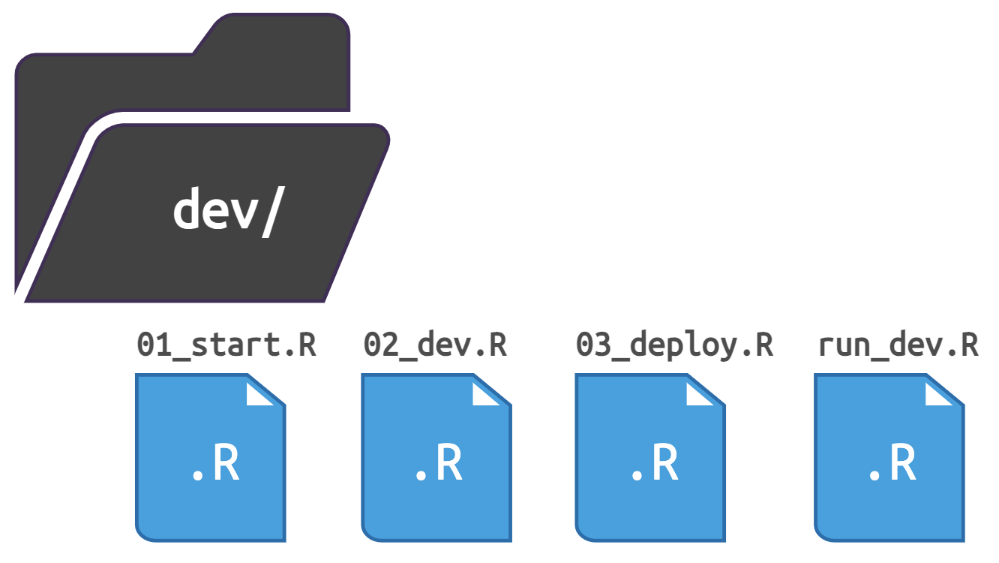
dev/ scriptsThe run_dev.R is also in the dev/ folder, but it’s for running a development version of your app (more on this later).
Start
To create a new golem app from the console, enter the following:
install.packages("golem")
library(golem)
golem::create_golem(path = "gap")If you’re creating a golem app using the New Project Wizard, the following defaults are available:
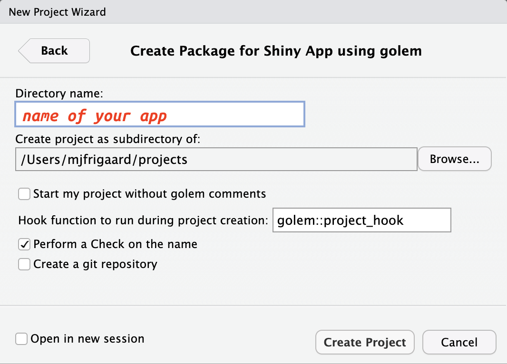
golem setupgolem shiny appI recommend using golem comments (they’re helpful and don’t change how the application code runs). When the new project opens, the initial folder structure for your new golem application is below:
show/hide golem folder structure
app-name/
├── DESCRIPTION
├── NAMESPACE
├── R
│ ├── app_config.R
│ ├── app_server.R
│ ├── app_ui.R
│ └── run_app.R
├── dev
│ ├── 01_start.R
│ ├── 02_dev.R
│ ├── 03_deploy.R
│ └── run_dev.R
├── [app-name].Rproj
├── inst
│ ├── app
│ │ └── www
│ │ └── favicon.ico
│ └── golem-config.yml
└── man
└── run_app.Rd
7 directories, 14 filesBegin 01_start.R
The dev/01_start.R file is covered in the first few sections of the golem text, but I prefer the package website as a reference because it walks through each dev/ script (with links to the golem functions).
Fill the DESCRIPTION
There are three files in a new golem app-package–NAMESPACE, DESCRIPTION, and [app name].Rproj. dev/01_start.R starts by building the DESCRIPTION file with golem::fill_desc()
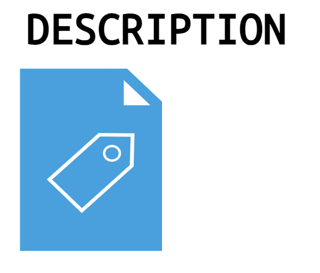
DESCRIPTIONfill_desc() is from the desc package, and the sections are entered in a key = "value" format
Example
DESCRIPTIONfile contents:golem::fill_desc( pkg_name = "gap", pkg_title = "An example goelm app", pkg_description = "A working example of the golem package.", author_first_name = "Martin", author_last_name = "Frigaard", author_email = "mjfrigaard@pm.me", repo_url = NULL # The URL of the GitHub Repo (optional) )show/hide output from golem::fill_desc()
✔ Setting `golem_version` to 0.0.0.9000 ✔ Setting `golem_name` to gap ✔ DESCRIPTION file modified
Set {golem} options
The golem::set_golem_options() wraps a collection of golem‘s ’opinionated’ application development and configuration options.
golem::set_golem_options()show/hide output from golem::set_golem_options()
── Setting {golem} options in `golem-config.yml` ────────────────────────────────────────────────────────────────────
✔ Setting `golem_name` to gap
✔ Setting `golem_wd` to golem::pkg_path()
You can change golem working directory with set_golem_wd('path/to/wd')
✔ Setting `golem_version` to 0.0.0.9000
✔ Setting `app_prod` to FALSE
── Setting {usethis} project as `golem_wd` ──────────────────────────────────────────────────────────────────────────
✔ Setting active project to '/projects/gap'set_golem_options() is a wrapper for a collection of golem option functions (I’ve included each function and a brief description of their behavior below):
show/hide golem options
golem::set_golem_options(
golem_name = golem::pkg_name(), # name of the app-package in DESCRIPTION
golem_version = golem::pkg_version(), # version in DESCRIPTION
golem_wd = golem::pkg_path(), # package root when starting a golem
app_prod = FALSE, # production mode?
talkative = TRUE, # Should the messages be printed to the console?
config_file = golem::get_current_config(golem_wd) # golem-config.yml location
)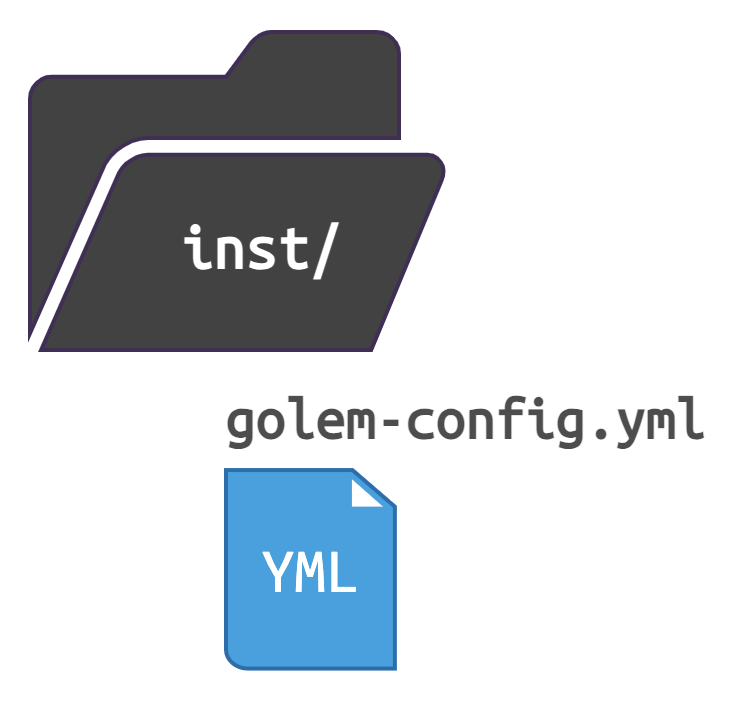
The new config file is located in the inst/ folder.
Install required dev dependencies
The golem::install_dev_deps() function makes sure the following packages are installed (I’ve grouped them into categories):
Development
Documentation & testing
attachment(deal with package dependencies)desc(ParseDESCRIPTIONfiles)testthat(unit testing your code)
Internals
rstudioapi(interacting with RStudio IDE)processx(execute and control subprocesses from R)
Files & paths
Deploy
dockerfiler(deploying apps with docker)rsconnect(deploy shiny apps with RSConnect)
golem::install_dev_deps()Below is an example with dockerfiler:
show/hide output from golem::install_dev_deps()
ℹ The package "dockerfiler" is required.
✖ Would you like to install it?
1: Yes
2: No
Selection: 1
✔ Updated metadata database: 5.32 MB in 12 files.
✔ Updating metadata database ... done
→ Will install 1 package.
→ Will download 1 CRAN package (104.29 kB).
+ dockerfiler 0.2.1 ⬇ (104.29 kB)
ℹ Getting 1 pkg (104.29 kB)
✔ Got dockerfiler 0.2.1 (x86_64-apple-darwin17.0) (104.29 kB)
✔ Downloaded 1 package (104.29 kB)in 1.1s
✔ Installed dockerfiler 0.2.1 (54ms)
✔ 1 pkg + 40 deps: kept 40, added 1, dld 1 (104.29 kB) [20.2s] Create Common Files
The ‘Create Common Files’ section of dev/01_start.R contains many of the functions and files covered in the ‘Whole Game’ section of R packages:
LICENSE
usethis::use_mit_license("Golem User")✔ Adding 'MIT + file LICENSE' to License ✔ Writing 'LICENSE' ✔ Writing 'LICENSE.md' ✔ Adding '^LICENSE\\.md$' to '.Rbuildignore'
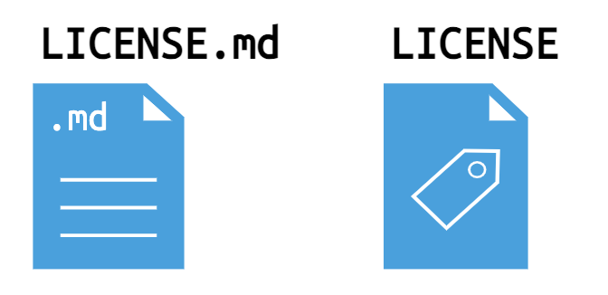
LICENSE fileREADME.Rmd
usethis::use_readme_rmd()✔ Writing 'README.Rmd' ✔ Adding '^README\\.Rmd$' to '.Rbuildignore' • Update 'README.Rmd' to include installation instructions.The README.md is built with
devtools::build_readme()devtools::build_readme()ℹ Installing gap in temporary library ℹ Building /projects/gap/README.Rmd
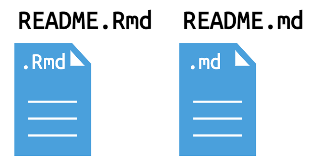
CODE_OF_CONDUCT.md
usethis::use_code_of_conduct()✔ Writing 'CODE_OF_CONDUCT.md' ✔ Adding '^CODE_OF_CONDUCT\\.md$' to '.Rbuildignore' • You may also want to describe the code of conduct in your README: ## Code of Conduct Please note that the gap project is released with a [Contributor Code of Conduct](https://contributor-covenant.org/version/2/1/CODE_OF_CONDUCT.html). By contributing to this project, you agree to abide by its terms. [Copied to clipboard]Paste of the code of conduct in the README.md is rebuild with
devtools::build_readme()devtools::build_readme()ℹ Installing gap in temporary library ℹ Building /projects/gap/README.Rmd
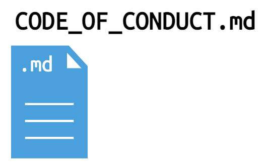
Lifecycle badge
usethis::use_lifecycle_badge("Experimental")✔ Adding Lifecycle: experimental badge to 'README.Rmd' • Re-knit 'README.Rmd' with `devtools::build_readme()`Rebuild the README.md with
devtools::build_readme()usethis::use_lifecycle_badge("Experimental")ℹ Installing gap in temporary library ℹ Building /projects/gap/README.Rmd
golem lifecycle badgeNEWS.md
usethis::use_news_md(open = FALSE)✔ Writing 'NEWS.md'
NEWS.md fileGit:
usethis::use_git()will ask if you’d like to commit the files in your golem app to a repo of the same name:usethis::use_git()✔ Setting active project to '/projects/gap' ✔ Initialising Git repo ✔ Adding '.Rproj.user', '.Rhistory', '.Rdata', '.httr-oauth', '.DS_Store', '.quarto' to '.gitignore' There are 16 uncommitted files: * '.gitignore' * '.here' * '.Rbuildignore' * 'CODE_OF_CONDUCT.md' * 'DESCRIPTION' * 'dev/' * 'gap.Rproj' * 'inst/' * 'LICENSE' * 'LICENSE.md' * ... Is it ok to commit them? 1: Definitely 2: Negative 3: Not now Selection: 1To initialize the Git pane, you’ll need to restart RStudio (in the next dialogue)
✔ Adding files ✔ Making a commit with message 'Initial commit' • A restart of RStudio is required to activate the Git pane Restart now? 1: Absolutely 2: Negative 3: No Selection: 1
Init Testing Infrastructure
golem::use_recommended_tests() with set up the testthat architecture for unit tests.
golem::use_recommended_tests()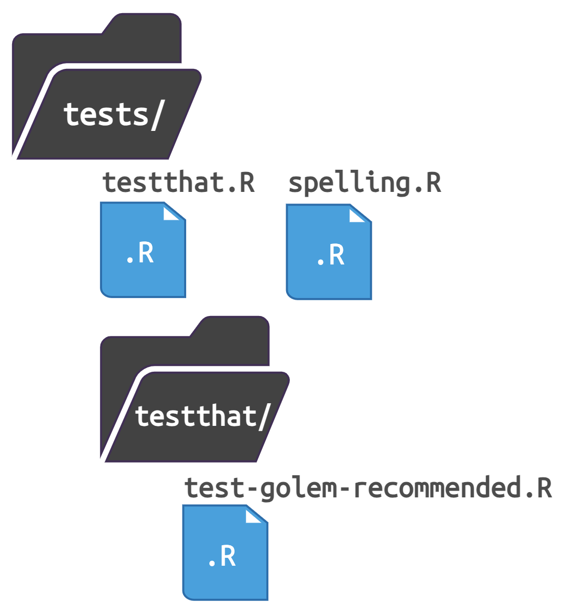
✔ Setting active project to '/projects/gap'
✔ Adding 'testthat' to Suggests field in DESCRIPTION
✔ Adding '3' to Config/testthat/edition
✔ Creating 'tests/testthat/'
✔ Writing 'tests/testthat.R'
• Call `use_test()` to initialize a basic test file and open it for editingIt also adds a few words to the WORDLIST file in the inst folder:
✔ Adding 'spelling' to Suggests field in DESCRIPTION
✔ Adding 'en-US' to Language
The following words will be added to the wordlist:
- Lifecycle
- goelm
- golem
Are you sure you want to update the wordlist?
1: Yes
2: No
Selection: 1
Added 3 and removed 0 words in /projects/gap/inst/WORDLIST
Updated /projects/gap/tests/spelling.R
• Run `devtools::check()` to trigger spell check
✔ Tests addedgolem::use_recommended_tests() also provides some examples for testing the UI, server, and other golem functions:
show/hide unit tests in test-golem-recommended.R
test_that("app ui", {
ui <- app_ui()
golem::expect_shinytaglist(ui)
# Check that formals have not been removed
fmls <- formals(app_ui)
for (i in c("request")) {
expect_true(i %in% names(fmls))
}
})
test_that("app server", {
server <- app_server
expect_type(server, "closure")
# Check that formals have not been removed
fmls <- formals(app_server)
for (i in c("input", "output", "session")) {
expect_true(i %in% names(fmls))
}
})
test_that(
"app_sys works",
{
expect_true(
app_sys("golem-config.yml") != ""
)
}
)
test_that(
"golem-config works",
{
config_file <- app_sys("golem-config.yml")
skip_if(config_file == "")
expect_true(
get_golem_config(
"app_prod",
config = "production",
file = config_file
)
)
expect_false(
get_golem_config(
"app_prod",
config = "dev",
file = config_file
)
)
}
)
# Configure this test to fit your need.
# testServer() function makes it possible to test code in server functions and modules, without needing to run the full Shiny application
testServer(app_server, {
# Set and test an input
session$setInputs(x = 2)
expect_equal(input$x, 2)
# Example of tests you can do on the server:
# - Checking reactiveValues
# expect_equal(r$lg, 'EN')
# - Checking output
# expect_equal(output$txt, "Text")
})
# Configure this test to fit your need
test_that(
"app launches",
{
golem::expect_running(sleep = 5)
}
)These tests pass right out of the box, and they give a little ‘sneak preview’ of how the golem framework works.
show/hide results from unit tests in test-golem-recommended.R
==> Testing R file using 'testthat'
ℹ Loading gap
[ FAIL 0 | WARN 0 | SKIP 0 | PASS 9 ]
Loading required package: shiny
[ FAIL 0 | WARN 0 | SKIP 1 | PASS 10 ]
── Skipped tests (1) ─────────
• interactive() is not TRUE
(1):
test-golem-recommended.R:72:5
Test completeFavicon
A favicon is a the little image that shows up on your browser tab or address bar. golem has a default favicon in the inst/app/ folder:
inst/
└── app
└── www
└── favicon.ico
3 directories, 1 fileThe inst/ folder serves a specific purpose in golem apps (and R packages), which I’ll cover more below. For our purpose, the golem::use_favicon() function can use the existing image:
golem::use_favicon(path = "inst/app/www/favicon.ico")The output introduces another common golem function: golem_add_external_resources()
✔ favicon.ico created at
/projects/gap/inst/app/www/favicon.ico
Favicon is automatically linked in app_ui via `golem_add_external_resources()`This function is used to add external resources to your application (and will come up often during development).
Add helper functions
Most applications will have two types of code–shiny functions for running your application (app functions), and functions that do everything else (or utility functions). The golem further distinguished utility functions into two types: “small functions that are reused throughout the app” (with a utils_ prefix), and “larger functions, which are more central to the application” (with a fct_ prefix).
These descriptions from the text are helpful for distinguishing between the two:
utils_functions: “…thehexmakeapp has two of these files,R/utils_ui.RandR/utils_server.R, in which you will find small functions that are reused throughout the app.”
fct_functions: “…inhexmake, you will findR/fct_mongo.R, which is used to handle all the things related to connecting and interacting with the Mongodb database.”
use_utils_ui()
The golem::use_utils_ui() function will add a collection of utility functions for the UI. Including with_test = TRUE will add a test for these functions.
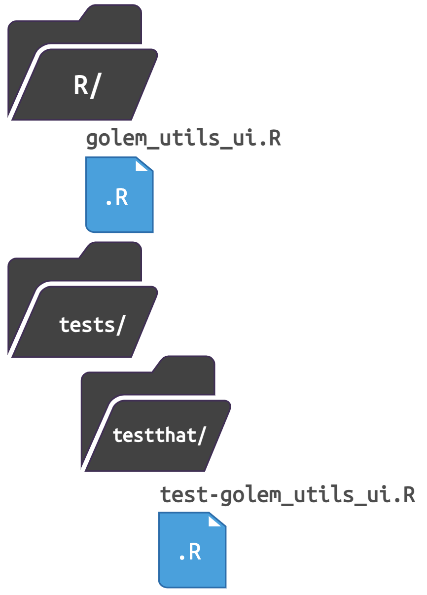
golem::use_utils_ui(with_test = TRUE)✔ File created at /projects/gap/R/golem_utils_ui.R
✔ Utils UI added
✔ File created at /projects/gap/tests/testthat/test-golem_utils_ui.R
✔ Tests on utils_server addeduse_utils_server()
golem also includes a set of functions for the application server (or server modules), golem::use_utils_server(). The with_test = TRUE will also add a test to the tests/testthat/ folder:
golem::use_utils_server(with_test = TRUE)✔ File created at /projects/gap/R/golem_utils_server.R
✔ Utils server added
✔ File created at /projects/gap/tests/testthat/test-golem_utils_server.R
✔ Tests on utils_server added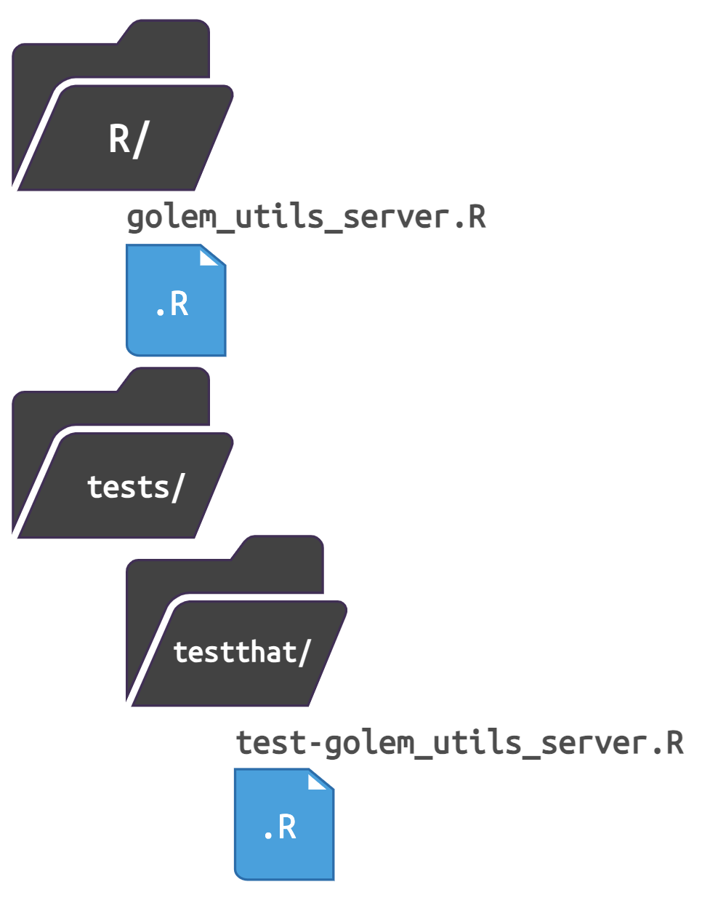
End 01_start.R
This is the final function in the dev/01_start.R file. In the next golem dev script (dev/02_dev.R), I’ll cover development of your golem application.
Build
The dev/02_dev.R file is appropriately titled, ‘Engineering’, and unlike the functions in the first script, these functions will be used repeatedly for creating files in the R/ and inst/ folders.
Begin 02_dev.R
App files
Let’s start by examining the contents of the R/ folder in our new golem application:
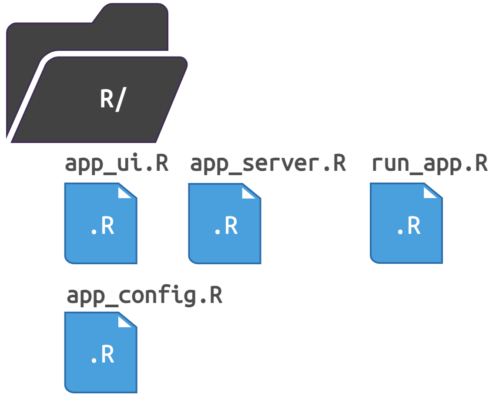
R/
├── app_config.R
├── app_server.R
├── app_ui.R
└── run_app.R
1 directory, 4 filesgolem applications structure shiny apps into three files: R/app_ui.R, R/app_server.R, and R/run_app.R.
The
R/app_ui.RandR/app_server.Rscripts aregolem’s version ofui.Randserver.RR/run_app.Ris a standalone app function, andR/app_config.Ris used to set/getgolemconfiguration settings (which we will cover more below).
app_ui.R
app_ui.R wraps the UI functions in shiny::tagList() (you’ll see this function in shiny UI module functions, too).
show/hide app_ui()
app_ui <- function(request) {
tagList(
# Leave this function for adding external resources
golem_add_external_resources(),
# Your application UI logic
fluidPage(
h1("gap")
)
)
}app_ui() also contains a call to golem_add_external_resources(), which we used above to add the favicon image.
show/hide golem_add_external_resources()
golem_add_external_resources <- function() {
add_resource_path(
"www",
app_sys("app/www")
)
tags$head(
favicon(),
bundle_resources(
path = app_sys("app/www"),
app_title = "gap"
)
# Add here other external resources
# for example, you can add shinyalert::useShinyalert()
)
}app_server.R
The contents of app_server.R file looks similar to a standard shiny server function:
show/hide app_server()
app_server <- function(input, output, session) {
# Your application server logic
}app_config.R
The app_config.R file contains the “internal mechanics for golem, notably for referring to values in the inst/ folder, and to get values from the config file in the inst/ folder”. Two functions drive the internal mechanics of your golem app: app_sys() and get_golem_config()
app_sys()is a wrapper around thesystem.file()function, and it’s used to “quickly refer to the files inside theinst/folder”
show/hide app_sys()
app_sys <- function(...) {
system.file(..., package = "gap")
}get_golem_config()is where you’ll setgolemconfiguration options (covered here in the text).
show/hide get_golem_config()
get_golem_config <- function(
value,
config = Sys.getenv(
"GOLEM_CONFIG_ACTIVE",
Sys.getenv(
"R_CONFIG_ACTIVE",
"default"
)
),
use_parent = TRUE,
# Modify this if your config file is somewhere else
file = app_sys("golem-config.yml")
) {
config::get(
value = value,
config = config,
file = file,
use_parent = use_parent
)
}get_golem_config() reads the inst/golem-config.yml configuration file:
default:
golem_name: gap
golem_version: 0.0.0.9000
app_prod: no
production:
app_prod: yes
dev:
golem_wd: !expr here::here()golem-config.yml gives me access to the app version, name, and (development) working directory. This file is designed to add “production-only elements” and be “shareable across golem projects”
run_app.R
run_app.R is the exported function I’ll use to run my golem app after loading/documenting/installing the package:
devtools::load_all(".")ℹ Loading gapdevtools::document()ℹ Updating gap documentation
ℹ Loading gap
Restarting R session...library(gap)
gap::run_app()Dependencies
Dependency management is a necessary evil of package development. shiny has a large ecosystem of user-written add-on packages. To use the code from add-on packages in our application, we need a way to keep track of which function belongs to which package.
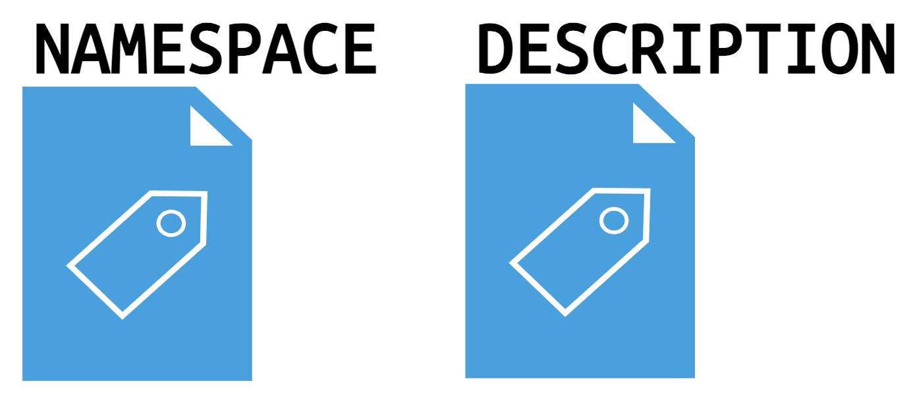
The DESCRIPTION file manages package-level dependencies. The Imports field in the DESCRIPTION file specifies packages that my package uses, so the functions from these packages will be available for my package, but not for users (unless they use the :: operator or load the package themselves).
The NAMESPACE file manages function-level access. The NAMESPACE file manages the functions that are exported from my package (i.e., functions available to users who install my package), and the functions my package imports from other packages.
The golem text describes the difference between these files in the following way,
“The
DESCRIPTIONfile dictates which packages have to be installed when your application is installed”“The
NAMESPACEfile describes how your app interacts with the R session at run time, i.e. when your application is launched”
The attachment package makes it easier to manage the dependencies in your golem application. It does this by looking through the files in your package to make sure everything is properly documented in the NAMESPACE and DESCRIPTION file (note that these two files are not equivalent or connected).
The att_amend_desc() function removes a lot of the tedium involved in dependency management:
attachment::att_amend_desc()This function adds the appropriate parameters to golem-config.yml and sets up function documentation in the DESCRIPTION file
Saving attachment parameters to yaml config file
Updating [app-name] documentation
Setting `RoxygenNote` to "7.2.3"It loads the contents of our package (i.e. devtools::load_all()) and writes the NAMESPACE file
ℹ Loading [app-name]
Writing NAMESPACEIt also writes the help files in the man/ folder.
Writing run_app.RdAdd modules
golem has functions for quickly creating modules and utility/helper functions in the R/ folder.
add_module()
golem::add_module(name = "name_of_module1", with_test = TRUE)
golem::add_module(name = "name_of_module2", with_test = TRUE) Add helper functions
golem apps differentiates two types of helper functions: uils_ and fct_.
add_utils()
uils_functions: “small functions that might be used several times in the application” … “more ‘topic centered’, in the sense that they gather functions that relate to a specific feature of the application(+”
golem::add_utils("helpers", with_test = TRUE)add_fct()
fct_functions: “larger functions that are more central to the application” … “more used as a place to put miscellaneous functions”
golem::add_fct("helpers", with_test = TRUE)with_test = TRUE ensures these functions will also create test files in tests/
External resources
dev/02_dev.R includes golem wrappers for including CSS, JavaScript, and SASS files to the inst/app/www/ folder:
JavaScript files
You can add JavaScript to your application using the golem::add_js_file("script") and golem::add_js_handler("handlers") functions.
The golem text has an entire chapter dedicated to JavaScript which is worth reading (and I’ll demonstrate an example with these functions below).
App styling
You can add CSS or SASS styling to your application using the golem::add_css_file("custom") and golem::add_sass_file("custom") functions, too.
Add internal datasets
If you application uses data, you can add it to your application with the usethis functions (use_data_raw() or use_data()). I recommend reading the data section of R packages (and this section on adding data to inst/extdata).
use_data_raw()
The data-raw/ folder is for ‘data-creating script’ that was used to create the version of the data in your app-package. Newly created .R scripts in use_data_raw() will have a call to use_data().
use_data()
The data/ folder stores the data files created from the scripts in data-raw/ (and any other data you need in your app-package).
“store R objects and make them available to the user…in
data/”
inst/extdata
Any other data you’d like to make available to users of your package should be stored in inst/extdata/
“store data in some raw, non-R-specific form and make it available to the user…in
inst/extdata/”
Tests
The tests/ folder was created in dev/01_start.R with golem::use_recommended_tests(), which is a wrapper around usethis::use_testthat()
In dev/02_dev.R, the golem::add_module() and golem::add_utils()/golem::add_fct() functions also include a with_test = TRUE argument, which creates a test file in the tests/ folder.
Documentation
R package vignettes contain high-level, long-form documentation for your package. These R Markdown documents combine narrative text and code that describe how the ‘parts’ (functions, data, etc.) of the package behave. In app-packages, vignettes might included the following information:
Introduction to the package
Installation guide
Usage examples
Description of the application and modules
Application workflow
Data preparation
Troubleshooting
FAQs
Advanced usage
Details on functions and datasets
References and Contact information
To create a new vignette in your package, run:
usethis::use_vignette("gap")✔ Setting active project to '/Users/mjfrigaard/projects/gap'
✔ Adding 'knitr' to Suggests field in DESCRIPTION
✔ Adding 'rmarkdown' to Suggests field in DESCRIPTION
✔ Adding 'knitr' to VignetteBuilder
✔ Adding 'inst/doc' to '.gitignore'
✔ Creating 'vignettes/'
✔ Adding '*.html', '*.R' to 'vignettes/.gitignore'
✔ Writing 'vignettes/gap.Rmd'
• Modify 'vignettes/gap.Rmd'The vignette file opens with the title matching the argument passed to use_vignette(). To build the vignettes in your package, run:
devtools::build_vignettes()Code Coverage
Test code coverage measures the extent to which the test cases cover the possible execution paths in the package codebase–its a way to ensure that the tests are robust enough to verify that the code behaves as expected.
There are two functions/methods used to calculate code coverage in your application: usethis::use_coverage() and covrpage::covrpage().
usethis::use_coverage()
use_coverage() is part of the usethis package and can be run interactively during development:
usethis::use_coverage()✔ Setting active project to '/Users/mjfrigaard/projects/gap'covrpage::covrpage()
Install covrpage using the following:
# install.packages("remotes")
remotes::install_github('yonicd/covrpage')
library(covrpage)To use covrpage, run the following
covrpage::covrpage()This sets up the README in the tests/ folder.
tests/
├── README.md <- covrpage README!
├── spelling.R
├── testthat
│ ├── test-golem-recommended.R
│ ├── test-golem_utils_server.R
│ └── test-golem_utils_ui.R
└── testthat.RThe test coverage vignette is created with use_covrpage_vignette()
covrpage::use_covrpage_vignette()copying tests_and_coverage.Rmd into ./vignettes
adding inst/doc to .gitignore
adding knitr,rmarkdown to Suggests field in ./DESCRIPTION
adding VignetteBuilder: knitr to ./DESCRIPTIONCI
Continuous integration can be handled with one of the GitHub Actions functions (make sure you’re using Git). See the usethis website for more information on using GitHub Actions.
If you’re using another CI management system, the following options are available.
Github Actions CI
Set up GitHub actions
# GitHub Actions usethis::use_github_action()# Chose one of the three usethis::use_github_action_check_release() usethis::use_github_action_check_standard() usethis::use_github_action_check_full()# Add action for PR usethis::use_github_action_pr_commands()
Other CI Options
Travis CI
usethis::use_travis() usethis::use_travis_badge()AppVeyor
usethis::use_appveyor() usethis::use_appveyor_badge()Circle CI
usethis::use_circleci() usethis::use_circleci_badge()Jenkins
usethis::use_jenkins()GitLab CI
usethis::use_gitlab_ci()
End 02_dev.R
Use
Writing code
New modules and utility functions can be created with golem::add_module() or golem::add_utils()/golem::add_fct()
These functions are added to the
R/folder and include@noRdby default (which must be removed create the.Rdfiles in theman/folder)# UI module template ------------------- #' test UI Function #' #' @description A shiny Module. #' #' @param id,input,output,session Internal parameters for {shiny}. #' #' @noRd #' #' @importFrom shiny NS tagList # server module template --------------- #' test Server Functions #' #' @noRdUI module functions end with a
_uisuffix:Click on Code to view code in
R/mod_plot.R#' plot UI Function #' #' @param id #' #' @return shiny UI module #' @export mod_plot_ui #' #' @importFrom shiny NS tagList tags #' @importFrom shiny plotOutput verbatimTextOutput mod_plot_ui <- function(id) { ns <- shiny::NS(id) shiny::tagList( shiny::tags$br(), shiny::tags$blockquote( shiny::tags$em( shiny::tags$h6( "The code for this application comes from the ", shiny::tags$a("Building web applications with Shiny", href = "https://rstudio-education.github.io/shiny-course/" ), "tutorial" ) ) ), shiny::plotOutput(outputId = ns("scatterplot")) ) }Server module functions end with a
_serversuffix:Click on Code to view code in
R/mod_plot.RCode
#' plot Server Functions #' #' @param id module id #' @param var_inputs inputs from mod_var_input #' #' @return shiny server module #' @export mod_plot_server #' #' @importFrom shiny NS moduleServer reactive #' @importFrom tools toTitleCase #' @importFrom shiny renderPlot #' @importFrom stringr str_replace_all #' @importFrom ggplot2 labs theme_minimal theme mod_plot_server <- function(id, var_inputs) { shiny::moduleServer(id, function(input, output, session) { movies <- gap::movies inputs <- shiny::reactive({ plot_title <- tools::toTitleCase(var_inputs$plot_title()) list( x = var_inputs$x(), y = var_inputs$y(), z = var_inputs$z(), alpha = var_inputs$alpha(), size = var_inputs$size(), plot_title = plot_title ) }) output$scatterplot <- shiny::renderPlot({ plot <- point_plot( df = movies, x_var = inputs()$x, y_var = inputs()$y, col_var = inputs()$z, alpha_var = inputs()$alpha, size_var = inputs()$size ) plot + ggplot2::labs( title = inputs()$plot_title, x = stringr::str_replace_all(tools::toTitleCase(inputs()$x), "_", " "), y = stringr::str_replace_all(tools::toTitleCase(inputs()$y), "_", " ") ) + ggplot2::theme_minimal() + ggplot2::theme(legend.position = "bottom") }) }) } ## To be copied in the UI # mod_plot_ui("plot_1") ## To be copied in the server # mod_plot_server("plot_1")- See all of the modules I use in this application here on GitHub examples
- See all of the modules I use in this application here on GitHub examples
Include tests for new modules and functions using the
with_test = TRUEargumenttests/testthat/ ├── _snaps ├── test-golem-recommended.R ├── test-golem_utils_server.R ├── test-golem_utils_ui.R ├── test-mod_plot.R ├── test-mod_plot_utils_server.R └── test-mod_var_input.R 2 directories, 6 files
Adding resources
To include other files (like images), add the image file to
inst/app/www/, then add thewww/to the path (see example UI code below)# add icon shiny::tags$img(src = "www/shiny.png")If I wanted to include images in their own folder (like
images/), I can usegolem::addResourcePath()to add the name of the sub-folder toinst/app/# add icon golem::add_resource_path( prefix = 'images', directoryPath = system.file('app/images', package = 'gap'))Now I can add the image file to the
inst/app/www/images/folder and include the following code in the UI:# add icon shiny::tags$img(src = "www/images/golem-hex.png")In
R/app_ui.R, theapp_ui()function contains the UI layout functions (fluidPage(),sidebarLayout(), etc.), and a call togolem_add_external_resources():Click on Code to view the updated
R/app_ui.RCode
#' The application User-Interface #' #' @param request Internal parameter for `{shiny}`. #' DO NOT REMOVE. #' @import shiny #' @noRd app_ui <- function(request) { shiny::tagList( # Leave this function for adding external resources golem_add_external_resources(), # Your application UI logic shiny::fluidPage( shiny::tags$h1("gap"), shiny::sidebarLayout( shiny::sidebarPanel( mod_var_input_ui("vars") ), shiny::mainPanel( # add shiny hex in www/ shiny::tags$img(src = "www/shiny.png"), mod_plot_ui("plot"), # add golem hex (in www/images/) shiny::fluidRow( shiny::tags$em(shiny::tags$h4( "Brought to you by: ", shiny::tags$img(src = "www/images/golem-hex.png") )) ) ) ) ) ) }Click on Code to view
golem_add_external_resources()Code
# this is also included in the app_ui.R script golem_add_external_resources <- function() { add_resource_path( "www", app_sys("app/www") ) tags$head( favicon(), bundle_resources( path = app_sys("app/www"), app_title = "gap" ) # Add here other external resources # for example, you can add shinyalert::useShinyalert() ) }Now when I run
devtools::load_all(),devtools::document(), install/restart, and load the package, I see the images properly rendered with the application:
Deploy
The final step in the guided tour contains functions for deploying a new application to Posit Connect or Docker (it opens automatically after completing the
dev/02_dev.R)Click on Code to view code in
dev/03_deploy.RCode
## Run checks ---- ## Check the package before sending to prod devtools::check() rhub::check_for_cran() # Deploy ## Local, CRAN or Package Manager ---- ## This will build a tar.gz that can be installed locally, ## sent to CRAN, or to a package manager devtools::build() ## RStudio ---- ## If you want to deploy on RStudio related platforms golem::add_rstudioconnect_file() golem::add_shinyappsio_file() golem::add_shinyserver_file() ## Docker ---- ## If you want to deploy via a generic Dockerfile golem::add_dockerfile_with_renv() ## If you want to deploy to ShinyProxy golem::add_dockerfile_with_renv_shinyproxy()- RStudio (Posit) Connect
- Docker
- I’ll deploy my app using shinyapps.io, so after running
golem::add_shinyappsio_file()I will see the following output and a newapp.Rfile.
Click on Code to view the output from
golem::add_shinyappsio_file()Code
golem::add_shinyappsio_file() ── Creating _disable_autoload.R ────────────────────────────────────────────────────── ✔ Created ✔ Setting active project to '/Users/mjfrigaard/projects/gap' ✔ Adding '^app\\.R$' to '.Rbuildignore' ✔ Adding '^rsconnect$' to '.Rbuildignore' ✔ Adding 'pkgload' to Imports field in DESCRIPTION • Refer to functions with `pkgload::fun()` ✔ File created at /Users/mjfrigaard/projects/gap/app.R To deploy, run: • rsconnect::deployApp() • Note that you'll need to upload the whole package to ShinyApps.io- The app.R contents
Click on Code to view the contents of
app.RCode
# Launch the ShinyApp (Do not remove this comment) # To deploy, run: rsconnect::deployApp() # Or use the blue button on top of this file pkgload::load_all(export_all = FALSE, helpers = FALSE, attach_testthat = FALSE) options( "golem.app.prod" = TRUE) gap::run_app() # add parameters here (if any)
Building an application with golem is very similar to developing an R package. New code files are placed in R/, external resources are placed in inst/, etc. I’ll cover creating modules and utility functions in the next section.